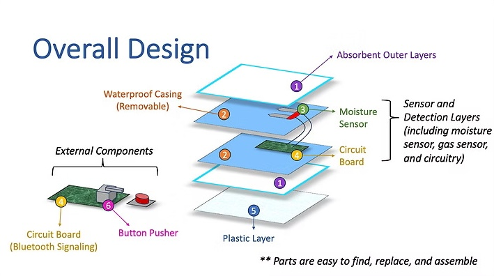

Real-Time Incontinence Detector
This project addresses a critical healthcare challenge faced by individuals with spinal cord injuries: managing unpredictable episodes of incontinence. Recognizing such occurrences can be difficult for nurses, delaying care and affecting patient comfort. Our solution uses moisture and gas sensors to detect these incidents in real time and promptly alert nursing staff, enabling rapid and responsive intervention.
Project Goals
- Identify and address a practical problem impacting patient comfort and quality of care.
- Collaborate with patients, caregivers, and nurses to refine system usability and integration.
- Prototype, test, and validate a functional sensing and alert system through iterative development.
Design Highlights
- Layered Sensor System: Integrates moisture and gas sensors between absorbent outer layers and a plastic backing, with removable waterproof casing for maintenance.
- Embedded Electronics: Custom circuit board handles sensor data processing and transmits alerts via Bluetooth to nursing staff.
- Easy Maintenance: Modular design allows parts to be easily found, replaced, and assembled.